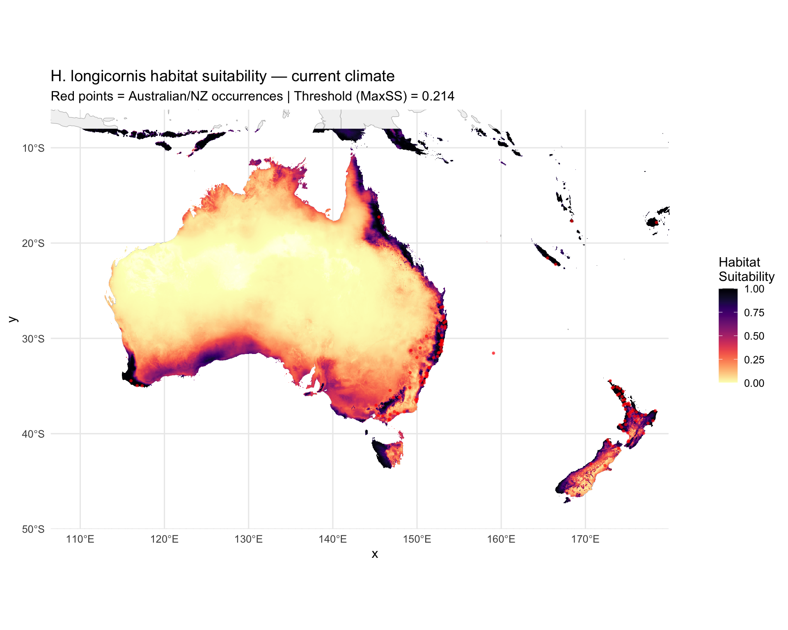
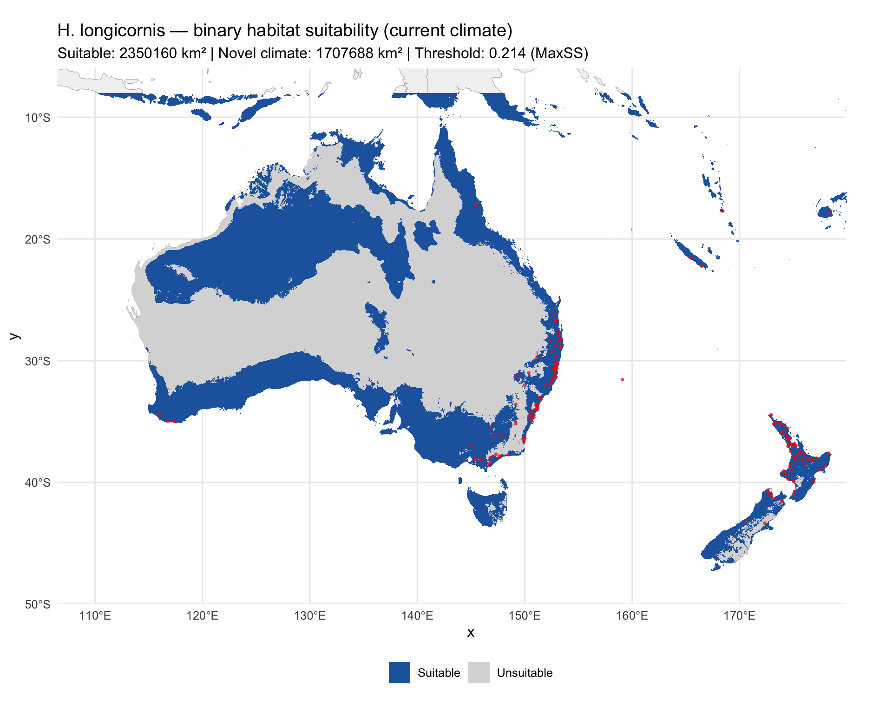

options(java.parameters = "-Xmx8g")
library(tidyverse)
library(terra)
library(sf)
library(rnaturalearth)
library(rnaturalearthdata)
library(predicts)
library(rJava)
library(viridis)Step 7: Current Prediction for Australia/NZ
Overview
Project the optimized MaxEnt model to Australia and New Zealand under current climate conditions. Key improvements over v1:
- MESS masking — areas with novel climate conditions (MESS < 0) are masked on the binary map and cross-hatched on the continuous map.
- Principled threshold — binary suitable/unsuitable classification uses the Maximum Sensitivity + Specificity (MaxSS) threshold instead of 0.5.
- Area calculations — suitable habitat area computed from the binary map.
base_dir <- "~/Library/CloudStorage/OneDrive-CSIRO/OneDrive - Docs/01_Projects/Hlongicornis_SDM/"
processed_v2 <- file.path(base_dir, "processed_data_2")
figures_dir <- file.path(base_dir, "figures_2")
outputs_dir <- file.path(base_dir, "outputs_2")1. Load model, rasters, and threshold
# Selected MaxEnt model
selected_model <- readRDS(file.path(processed_v2, "selected_maxent_model.rds"))
# Environmental rasters for Australia/NZ (selected variables only)
env_aus_nz <- rast(file.path(processed_v2, "env_selected_aus_nz.tif"))
# MESS raster (computed in Step 6)
mess_aus_nz <- rast(file.path(processed_v2, "mess_aus_nz.tif"))
# Primary threshold (MaxSS, computed in Step 6)
primary_threshold <- as.numeric(readLines(
file.path(processed_v2, "primary_threshold.txt")
))
sprintf("Loaded model, env rasters (%d layers), and threshold (%.4f)",
nlyr(env_aus_nz), primary_threshold)[1] "Loaded model, env rasters (5 layers), and threshold (0.2138)"2. Generate continuous suitability prediction
# Project the model to Australia/NZ
pred_current <- predict(env_aus_nz, selected_model, type = "cloglog")
names(pred_current) <- "suitability"
# Summary statistics
suit_stats <- global(pred_current, fun = c("mean", "min", "max", "sd"),
na.rm = TRUE)
sprintf("Suitability range: %.4f to %.4f (mean = %.4f, SD = %.4f)",
suit_stats$min, suit_stats$max, suit_stats$mean, suit_stats$sd)[1] "Suitability range: 0.0011 to 1.0000 (mean = 0.1912, SD = 0.2710)"3. Apply binary threshold and MESS masking
# Binary prediction using MaxSS threshold
pred_binary <- pred_current >= primary_threshold
names(pred_binary) <- "suitable"
# MESS mask: identify cells with novel climate (MESS < 0)
mess_mask <- mess_aus_nz >= 0 # TRUE = analogous, FALSE = novel
# Binary prediction with MESS masking (novel areas set to NA)
pred_binary_masked <- mask(pred_binary, mess_mask, maskvalues = FALSE)
names(pred_binary_masked) <- "suitable_mess_masked"
# Count cells
cell_area_km2 <- prod(res(pred_binary)) * 111^2 * cos(mean(ext(pred_binary)[3:4]) * pi / 180)
n_suitable <- global(pred_binary, sum, na.rm = TRUE)[[1]]
n_suitable_masked <- global(pred_binary_masked, sum, na.rm = TRUE)[[1]]
n_novel <- global(!mess_mask, sum, na.rm = TRUE)[[1]]
n_total_land <- global(!is.na(pred_binary), sum)[[1]]
area_suitable <- n_suitable * cell_area_km2
area_suitable_masked <- n_suitable_masked * cell_area_km2
area_novel <- n_novel * cell_area_km2
sprintf("Suitable habitat (before MESS mask): %.0f km² (%.1f%% of land)",
area_suitable, 100 * n_suitable / n_total_land)
sprintf("Suitable habitat (after MESS mask): %.0f km² (%.1f%% of land)",
area_suitable_masked, 100 * n_suitable_masked / n_total_land)
sprintf("Novel climate area (MESS < 0): %.0f km² (%.1f%% of land)",
area_novel, 100 * n_novel / n_total_land)[1] "Suitable habitat (before MESS mask): 2350160 km² (28.3% of land)"
[1] "Suitable habitat (after MESS mask): 2146749 km² (25.9% of land)"
[1] "Novel climate area (MESS < 0): 1707688 km² (20.6% of land)"4. Maps
# Convert to data frame for ggplot
pred_df <- as.data.frame(pred_current, xy = TRUE) %>%
filter(!is.na(suitability))
world_map <- ne_countries(scale = "medium", returnclass = "sf")
# Load occurrence points for overlay
occ <- read_csv(file.path(processed_v2, "occurrences_stratified.csv"),
show_col_types = FALSE) %>%
filter(region == "Oceania") # Only Australian/NZ occurrences
ggplot() +
geom_sf(data = world_map, fill = "grey95", colour = "grey70", linewidth = 0.2) +
geom_raster(data = pred_df, aes(x = x, y = y, fill = suitability)) +
scale_fill_gradientn(
colours = c("white", magma(256, direction = -1)),
limits = c(0, 1),
name = "Habitat\nSuitability"
) +
geom_point(data = occ, aes(x = lon, y = lat),
colour = "red", size = 1, alpha = 0.7, shape = 16) +
coord_sf(xlim = c(110, 180), ylim = c(-48, -8)) +
labs(
title = "H. longicornis habitat suitability — current climate",
subtitle = sprintf("Red points = Australian/NZ occurrences | Threshold (MaxSS) = %.3f",
primary_threshold)
) +
theme_minimal(base_size = 12)
ggsave(file.path(figures_dir, "07_current_suitability_continuous.png"),
width = 10, height = 8, dpi = 300)
# Create a three-class raster: suitable, unsuitable, novel (MESS < 0)
# 0 = unsuitable, 1 = suitable, 2 = novel climate (unreliable)
pred_classified <- pred_binary
pred_classified[!mess_mask & !is.na(pred_binary)] <- 2
class_df <- as.data.frame(pred_classified, xy = TRUE) %>%
filter(!is.na(suitable)) %>%
mutate(
category = case_when(
suitable == 2 ~ "Novel climate (MESS < 0)",
suitable == 1 ~ "Suitable",
suitable == 0 ~ "Unsuitable"
),
category = factor(category,
levels = c("Suitable", "Unsuitable", "Novel climate (MESS < 0)"))
)
ggplot() +
geom_sf(data = world_map, fill = "grey95", colour = "grey70", linewidth = 0.2) +
geom_raster(data = class_df, aes(x = x, y = y, fill = category)) +
scale_fill_manual(
values = c(
"Suitable" = "#2166AC",
"Unsuitable" = "grey85",
"Novel climate (MESS < 0)" = "#FFD700"
),
name = NULL
) +
geom_point(data = occ, aes(x = lon, y = lat),
colour = "red", size = 1, alpha = 0.7, shape = 16) +
coord_sf(xlim = c(110, 180), ylim = c(-48, -8)) +
labs(
title = "H. longicornis — binary habitat suitability (current climate)",
subtitle = sprintf(
"Suitable: %.0f km² | Novel climate: %.0f km² | Threshold: %.3f (MaxSS)",
area_suitable, area_novel, primary_threshold
)
) +
theme_minimal(base_size = 12) +
theme(legend.position = "bottom")
ggsave(file.path(figures_dir, "07_current_suitability_binary.png"),
width = 10, height = 8, dpi = 300)
5. Save outputs
# Save rasters
writeRaster(pred_current,
file.path(processed_v2, "prediction_current_continuous.tif"),
overwrite = TRUE)
writeRaster(pred_binary,
file.path(processed_v2, "prediction_current_binary.tif"),
overwrite = TRUE)
writeRaster(pred_binary_masked,
file.path(processed_v2, "prediction_current_binary_mess_masked.tif"),
overwrite = TRUE)
# Save area statistics
area_stats <- tibble(
Measure = c(
"Suitable habitat (before MESS mask)",
"Suitable habitat (after MESS mask)",
"Novel climate area (MESS < 0)",
"Total land area (Aus/NZ extent)",
"Threshold (MaxSS)"
),
Value = c(
sprintf("%.0f km²", area_suitable),
sprintf("%.0f km²", area_suitable_masked),
sprintf("%.0f km²", area_novel),
sprintf("%.0f km²", n_total_land * cell_area_km2),
sprintf("%.4f", primary_threshold)
)
)
write_csv(area_stats, file.path(outputs_dir, "current_habitat_area_v2.csv"))
sprintf("Current prediction outputs saved")[1] "Current prediction outputs saved"Summary
area_stats# A tibble: 5 × 2
Measure Value
<chr> <chr>
1 Suitable habitat (before MESS mask) 2350160 km²
2 Suitable habitat (after MESS mask) 2146749 km²
3 Novel climate area (MESS < 0) 1707688 km²
4 Total land area (Aus/NZ extent) 8292949 km²
5 Threshold (MaxSS) 0.2138 Session Information
sessionInfo()R version 4.4.1 (2024-06-14)
Platform: aarch64-apple-darwin20
Running under: macOS 26.2
Matrix products: default
BLAS: /Library/Frameworks/R.framework/Versions/4.4-arm64/Resources/lib/libRblas.0.dylib
LAPACK: /Library/Frameworks/R.framework/Versions/4.4-arm64/Resources/lib/libRlapack.dylib; LAPACK version 3.12.0
locale:
[1] en_US.UTF-8/en_US.UTF-8/en_US.UTF-8/C/en_US.UTF-8/en_US.UTF-8
time zone: Australia/Brisbane
tzcode source: internal
attached base packages:
[1] stats graphics grDevices utils datasets methods base
other attached packages:
[1] viridis_0.6.5 viridisLite_0.4.2 rJava_1.0-11
[4] predicts_0.1-19 rnaturalearthdata_1.0.0 rnaturalearth_1.1.0
[7] sf_1.0-24 terra_1.8-93 lubridate_1.9.4
[10] forcats_1.0.0 stringr_1.6.0 dplyr_1.1.4
[13] purrr_1.1.0 readr_2.1.6 tidyr_1.3.1
[16] tibble_3.3.1 ggplot2_4.0.0 tidyverse_2.0.0
loaded via a namespace (and not attached):
[1] gtable_0.3.6 xfun_0.53 htmlwidgets_1.6.4 tzdb_0.5.0
[5] vctrs_0.7.1 tools_4.4.1 generics_0.1.4 parallel_4.4.1
[9] proxy_0.4-29 pkgconfig_2.0.3 KernSmooth_2.23-26 RColorBrewer_1.1-3
[13] S7_0.2.0 lifecycle_1.0.5 compiler_4.4.1 farver_2.1.2
[17] textshaping_1.0.3 codetools_0.2-20 htmltools_0.5.8.1 class_7.3-23
[21] yaml_2.3.10 pillar_1.11.1 crayon_1.5.3 classInt_0.4-11
[25] tidyselect_1.2.1 digest_0.6.37 stringi_1.8.7 labeling_0.4.3
[29] fastmap_1.2.0 grid_4.4.1 cli_3.6.5 magrittr_2.0.4
[33] utf8_1.2.6 e1071_1.7-17 withr_3.0.2 scales_1.4.0
[37] bit64_4.6.0-1 timechange_0.3.0 rmarkdown_2.29 bit_4.6.0
[41] gridExtra_2.3 ragg_1.5.0 hms_1.1.4 evaluate_1.0.5
[45] knitr_1.50 rlang_1.1.7 Rcpp_1.1.1 glue_1.8.0
[49] DBI_1.2.3 vroom_1.7.0 jsonlite_2.0.0 R6_2.6.1
[53] systemfonts_1.2.3 units_1.0-0